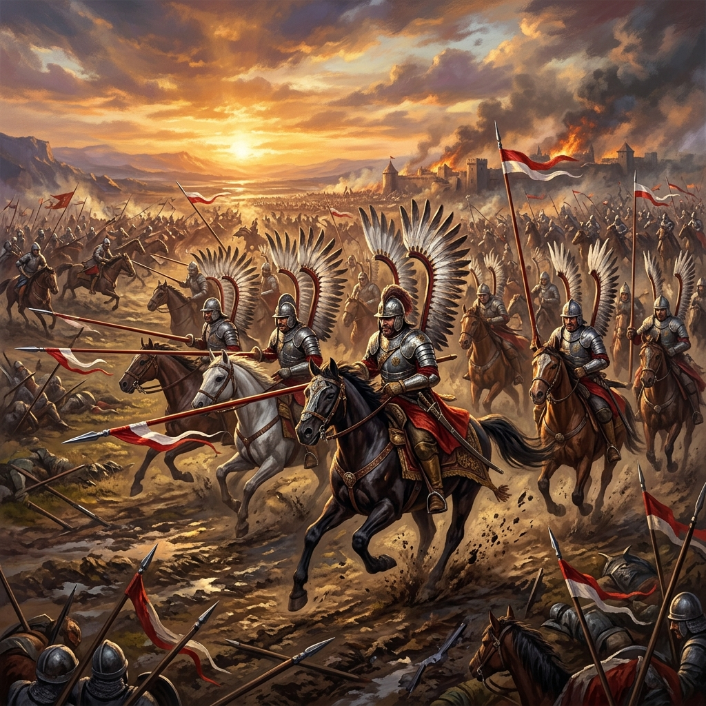
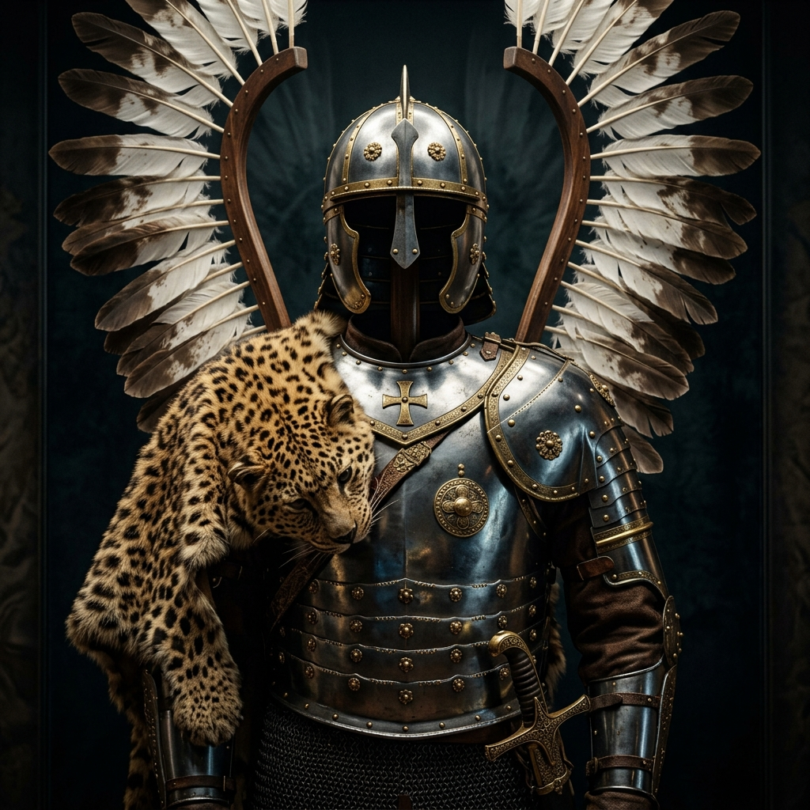

Przez ponad 125 lat budzili strach na polach bitew całej Europy. Poznaj niesamowite dzieje husarii — formacji, która łączyła niezrównaną taktykę, spektakularną odwagę i charakterystyczne skrzydła.
Początki husarii sięgają przełomu XV i XVI wieku. Początkowo uformowana z zaciężnych jeźdźców serbskich jako lekka kawaleria, w drugiej połowie XVI wieku została zreformowana przez króla Stefana Batorego w ciężkozbrojną formację przełamującą.
Dzięki unikalnemu połączeniu ciężkiej ochrony zbroi z manewrowością i potężną siłą uderzeniową kopii, husaria stała się koronną bronią Rzeczypospolitej Obojga Narodów w starciach ze Szwedami, Rosjanami, Turkami i Tatarami.
"Husarz na dobrym koniu przebije kopią każdego wroga, a zbroja jego odbije każdą kulę z muszkietu."
— XVII-wieczne kroniki wojskowe
Połączenie najwyższej próby rzemiosła i funkcji bojowej.

Składała się z napierśnika, naplecznika, obojczyka, naramienników i karwaszy chroniących przedramiona. Wykonana z hartowanej stali, ozdabiana mosiężnymi rozetami, krzyżami i wizerunkami Matki Boskiej. Często pokryta skórami dzikich zwierząt (leopardów, tygrysów) podkreślającymi status społeczny husarza.
Kluczowa broń przełamująca o długości od 4.5 do nawet 6.2 metra. Kopia była drążona w środku (pusta), dzięki czemu była lekka i niezwykle sztywna. Używana tylko raz — pękała podczas uderzenia w klatkę piersiową lub zbroję wroga, tworząc ogromną wyrwę w szeregach przeciwnika.
Szabla husarska (często typu paluch) uchodzi za szczytowe osiągnięcie w dziedzinie broni siecznej — idealnie wyważona do cięć z konia. Koncerz (długi na ok. 1.5m szpad) służył do kłucia leżącego wroga po złamaniu kopii.
Dlaczego szarża husarska była tak zabójczo skuteczna?
Husaria ruszała do szarży w luźnym szyku (ok. 3-4 metrów między końmi), aby zminimalizować straty od ognia artylerii. Dopiero kilkadziesiąt metrów przed wrogiem jeźdźcy zacieśniali szyk kolano w kolano, uderzając jak lity mur ze stali i mięśni.
Skrzydła z piór orlich lub sępich nie tylko chroniły plecy jeźdźca przed cięciami i lasso, ale wywoływały potężny efekt psychologiczny. Szum piór podczas szarży płoszył konie wroga, a husarze wyglądali na nadludzkie istoty.
Husarska kopia była celowo dłuższa niż piki piechoty wroga (które miały ok. 4-5 metrów). Husarz mógł uderzyć i przebić pikiniera zanim ten zdołał sięgnąć grotem jego konia.
Kliknij na bitwę, aby odtworzyć przebieg i proporcje wojsk.
Jan Karol Chodkiewicz rozgromił trzykrotnie silniejsze wojska szwedzkie. Kluczem była pozorowana ucieczka i niesamowite przełamujące uderzenie husarii, która rozbiła szwedzki szyk piechoty w zaledwie kilkanaście minut.